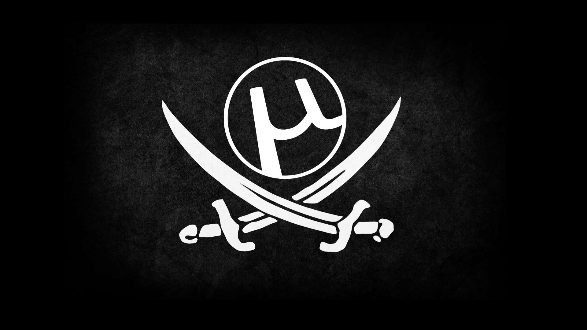
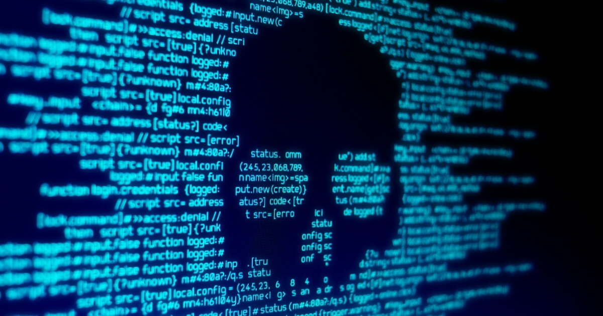

Вред Компьютерного
Пиратства

Определение компьютерного пиратства и его видов
Компьютерное пиратство — это незаконное копирование, распространение или использование программного обеспечения, музыки, фильмов и других цифровых материалов без разрешения правообладателя. Существует несколько видов пиратства:
1. Копирование программного обеспечения — когда пользователи нелегально скачивают или распространяют программы без лицензии.
2. Использование "ломаного" ПО — это программы, которые были модифицированы для обхода защиты от копирования.
3. Скачивание контента с торрент-сайтов — загрузка фильмов, музыки и игр через специальные сети, где авторские права часто игнорируются.
4. Стриминг пиратского контента — просмотр фильмов или сериалов на сайтах, которые не имеют прав на их трансляцию.
Здесь будет рассматриваться именно проблема пиратского программного обеспечения.
Последствия использования пиратского программного обеспечения
Использование пиратского ПО может иметь серьезные последствия как для пользователей, так и для разработчиков:
1. Безопасность — пиратские программы часто содержат вирусы и вредоносные программы, которые могут повредить компьютер или украсть личные данные.
2. Отсутствие обновлений — пиратское ПО не получает официальных обновлений, что делает его уязвимым для атак.
3. Юридические последствия — использование пиратского ПО может привести к штрафам и даже уголовной ответственности.
4. Ущерб индустрии — пиратство наносит вред разработчикам, так как они теряют доходы от продаж, что может привести к сокращению рабочих мест в этой области.
Последствия использования пиратского программного обеспечения могут быть серьезными и многообразными, что подчеркивает важность соблюдения законов и выбора легальных альтернатив. далее мы подробнее рассмотрим последствия с точки зрения закона
Проблемы с законом изза использования пиратского программного обеспечения
Законодательство большинства стран защищает авторские права на программное обеспечение и другие цифровые материалы. Важно помнить, что:
1. Лицензия — большинство программ имеют лицензионные соглашения, которые регулируют их использование. Неправомерное использование нарушает закон.
2. Штрафы и наказания — за нарушение авторских прав могут быть наложены значительные штрафы, а в некоторых случаях возможно уголовное преследование.
3. Защита прав потребителей — легальное ПО часто предлагает поддержку и гарантии, чего нет у пиратских версий.
Заключение
В заключение, компьютерное пиратство — это серьезная проблема, которая затрагивает не только разработчиков, но и пользователей. Осознавая риски и последствия, мы можем сделать выбор в пользу легального программного обеспечения и поддержать создателей контента.